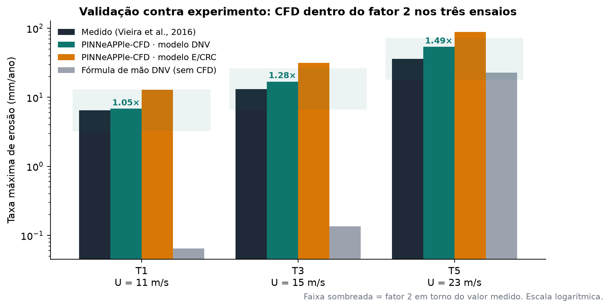
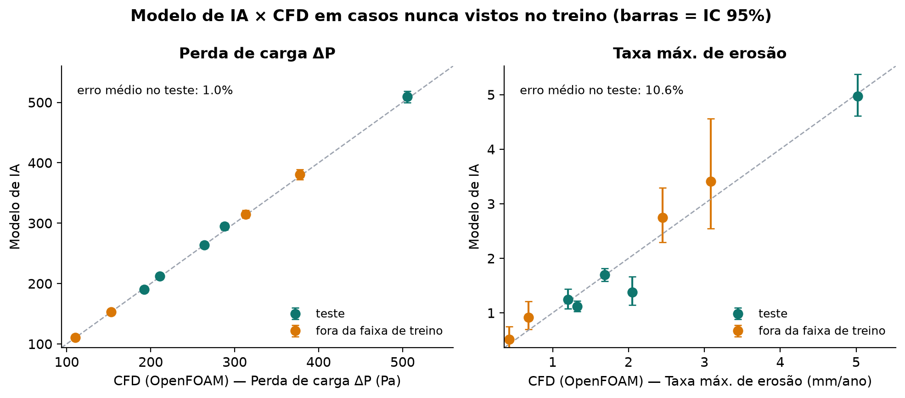

Success stories · Case · oil and gas
Where the pipeline will fail, and when
Sand erosion in a 90° bend: real CFD, validated against a published experiment, plus an AI model that answers in milliseconds.
Validated
Objective
Solid particles wear bends and fittings until the wall fails. The hand formulas the industry uses to estimate how much and where a pipeline will wear can be off by orders of magnitude, and a traditional CFD study takes weeks and needs a dedicated specialist. This case set out to answer two questions with the same artefact: where the wall fails first, and how often that answer can be recomputed when the flow rate changes.
Key results
- The simulation landed between 1.05× and 1.49× the erosion measured in the lab, inside the factor-2 acceptance criterion. The hand formula, applied to the same case, came out about 100× below the measurement.
- The AI trained on the campaign reproduces pressure drop to 1.0% error on configurations it never saw, and erosion rate to 10.6% inside the training range — 19.7% outside it.
- A full campaign costs 1.9 CPU-hours: 32 simulations in 23 minutes, about US$0.06. That is what makes it viable to redo the map every time the flow rate changes.
The problem: the hand formula is not conservative, it is unpredictable
Erosion damage is governed by impact angle and by the local particle velocity. In a 90° bend the peak sits on the outer wall, just past the inlet — a region a few centimetres wide that carries most of the damage. Hand estimates treat the bend as a whole and lose exactly that concentration.
The industry standard for this kind of calculation is DNV RP-O501, which requires a resolved flow field. In other words: to know where the wall will fail, you have to solve the flow, not estimate it.


A guided flow, from the problem to the erosion map
The platform takes the problem in steps — geometry (a standard part or the client's CAD in STL, STEP or IGES), mesh level, fluid and particles — builds the mesh, runs OpenFOAM with particle tracking and an erosion model, runs the campaign and trains a model on the results.
Every number ships with an evidence map: what was simulated, what was learned, what it was checked against, and what is still pending.
The surrogate, checked against the simulation and not against itself
The AI model is trained on the campaign and then tested on configurations that were not in it. The panel below shows the test cases with a 95% confidence interval; in orange, the ones outside the training range, where the error rises from 10.6% to 19.7%.

“The erosion model constants come from a secondary source, so the platform flags erosion as PRELIMINARY. What is proven is the comparison: the simulation lands inside the experiment's factor 2; the hand formula does not.”
Let's build your solution
Your engineering challenge could be our next project.
Talk to our team about Physics AI consulting or explore PINNeAPPle Studio for modeling and verification workflows.